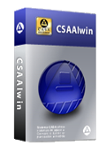
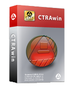
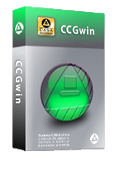
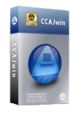

Sistemas CASA

Formalmente establecida en 1995. Se ubica en el Sector Industrial de Software especializado en sistemas aduanales de nuestro país.
Con doce años de experiencia en el medio informático y aduanal se encuentra en la clasificación de Pequeña empresa mexicana.
Nuestro mercado principal son empresas usuarias del comercio exterior de nuestro país. específicamente empresas denominadas como:
Agencias aduanales, importadoras/Exportadoras con apoderado aduanal y, Almacenes Generales de Depósito.
Afiliados a la Asociación de Mexicana de la Industria de Tecnologías de Información, A.C. (AMITI).
CSSAIwin
Elaboración de Pedimentos

Permite la elaboración, validación y pago electrónico de pedimentos en todos los regímenes aduaneros vigentes, dando cumplimiento a la legislación aduanera en vigor y realizar el procesamiento de la información de sus embarques y de las mercancías cubriendo hasta con el más mínimo requerimiento del archivo de transmisión que se compone de un número variable de registros.
Genera todo tipo de pedimentos de forma fácil y rápida, con el mayor número de validaciones técnicas y normativas que representen a la agencia aduanal seguridad y eliminación de errores u omisiones.
Caracteristicas:
- Concepto multipatentes-aduanas que permite la concentración de la información en una sola base de datos.
- Captura de pedimentos en 3 pantallas con bloques de captura.
- Prevalidación sintáctica, catalógica y normativa integrada en la captura de datos.
- Incluye tarifa que reporta y valida durante la captura Aranceles, Permisos y Regulaciones No Arancelarias.
- Cálculo y generación automática de contribuciones e identificadores del pedimento.
- Asignación y control de números de pedimento conforme un consecutivo o referencia aduanal.
- Aviso, validación y aplicación de criterios normativos por clave de documento.
- Genera archivos de validación, formatos RTI, CI de SAGARPA.
- Incluye boletín informativo de Comercio Exterior de gran interés.
- Catalogo amigable que filtra los pedimentos por validar, validados, pagados, por espejo y usuario de captura.
CTRAwin
Tráfico y Despacho Aduanero

Le proporciona el medio de automatización integral de las funciones en las áreas operativas de su empresa. El sistema consolida la información de clientes, proveedores, avisos de embarque, recolección de guías, asignación de referencias, registro de tramitación, control de solicitud y recepción de anticipos; recuperando y enviando información a los sistemas de Pedimentos y de Facturación y cobranza.
El controlar cada una de las etapas del despacho aduanero mediante la integración de sistemas asegura la obtención de información oportuna, relevante y útil para una eficiente toma de decisiones.
Lleva el seguimiento y control del embarque desde su registro hasta la entrega de las mercancías al cliente.
Controla las actividades de las áreas operativas de la agencia aduanal, a efecto de optimizar y agilizar el servicio de despacho aduanal.
Caracteristicas:
- Desarrollado con la más alta tecnología Cliente – Servidor para Windows.
- Registro y operación de múltiples Patentes y Aduanas.
- Controla y distribuye la información de clientes, proveedores y destinatarios.
- Registro y control de los avisos del cliente, recolección de guías y asignación de referencias.
- Registro y Clasificación de Mercancías por numero de parte con reporte de Permisos y Regulaciones.
- Registro de los resultados de la tramitación (Previo y Reconocimiento aduanero).
- Generación de la solicitud de anticipos.
- Elaboración del expediente de tráfico.
- Registro de etapas y fechas en la operación aduanal.
- Consulta en línea de la información del Embarque, del Pedimento, Anticipos, Cuentas de gastos y Cobranza.
- Conexión a los Sistemas de Pedimentos CSAAIwin, Caja CCAJwin y Facturación CCGwin.
- Emisión de diversos reportes de Operaciones por Etapas con exportación y envío por correo electrónico en formatos de Word, Excel, Acrobat y otros.
- Reportes con diseño que permite personalizar su contenido y presentación.
CVALwin
Manifestación de Valor en Aduana
Es una poderosa y eficiente herramienta de apoyo a través de la cual obtendrá la solución más funcional a la obligación de contar con la Manifestación de Valor en Aduana de las Mercancías y las Hojas de Cálculo correspondientes.
Este producto esta dirigido a usted que es Agente Aduanal y desea ofrecer un valor agregado a la comunidad importadora del País.
Le ofrece la oportunidad de modernizar los procesos para el registro y control de mercancías, y así atender las necesidades de apertura comercial y globalización de los mercados.
Genera la manifestación y hoja de cálculo que determinan el valor en aduana de las mercancías.
Genera automáticamente la manifestación de Valor en Aduana y hoja de cálculo sin realizar captura alguna al enlazar al sistema de pedimentos CSAAIwin.
Caracteristicas:
- Concepto multipatentes-aduanas que permite la concentración de la información en una sola base de datos en servidores Windows y Linux.
- Elaboración e impresión de la Manifestación de Valor en Aduana y hojas de Cálculo para las diferentes aduanas del País.
- Registro y clasificación de productos por Proveedor.
- Prorrateo automático de los gastos incrementables y no incrementables.
- Validación de criterios aplicables a los métodos de valoración vigentes.
- Reportes estadísticos con exportación y envío por correo electrónico en formatos de Word, Excel y PDF.
- Reportes estadísticos por proveedor, aduana y estado de la declaración.
- Permite capturar la Manifestación de Valor en Aduana en 2 pantallas.
- Configuración del entorno de trabajo para las diferentes aduanas del país.
- Manifestación de Valor en Aduana por periodo de 6 meses.
CCGwin
Facturación y Cobranza

Es la mejor opción para automatizar la elaboración, el seguimiento y el control de las Cuentas de Gastos, ofrece un medio eficiente en el control de la cobranza, mediante la obtención oportuna de reportes de facturación elaborada, cobrada, pendiente de cobro y estados de cuenta al cliente.
Emite facturas, cuentas de gastos, recibos de honorarios; generando automáticamente el registro de cobranza y estados de cuenta del cliente.
Agiliza el proceso de facturación y cobranza; se evita la captura de hasta un 90% de datos al enlazarse con los sistemas de pedimentos CSAAIwin y caja CCAJwin.
Caracteristicas:
- Definición por cliente de tablas de cobro de honorarios, servicios complementarios, recolección/entrega y conceptos de complementarios.
- Cálculo automático de la cuenta de gastos.
- Ajuste a cualquier formato la impresión de la cuenta de gastos, recibos de honorarios y facturas anexas.
- Manejo e impresión de notas de crédito y de cargo.
- Emisión de reportes de facturación, cobranza, estados de cuenta entre otros.
- Registro y operación de múltiples Patentes y Aduanas.
- Impresión de proformas para su revisión.
- Comunicación con diferentes oficinas mediante nuestra utilería llamada “Espejo”.
- Manejo de series y asignación dinámica de números de facturas.
- Emisión de diversos reportes de Facturación, Cobranza y Estados de Cuenta con exportación y envío por correo electrónico en formatos de Word, Excel, PDF y otros.
CCAJwin
Caja y Control Bancario

Es un sistema orientado al control de las operaciones bancarias efectuadas por el despacho de las mercancías y de los movimientos internos de la empresa. Le permite elaborar y registrar los cargos, abonos, pólizas cheque, recibos de anticipos y cierres de cuentas bancarias.
Control de cuentas bancarias por gastos e ingresos de la agencia.
Anticipos del cliente y gastos por el despacho aduanal.
Controla los ingresos, egresos y saldos en las cuentas bancarias, distinguir de los fondos los anticipos del cliente de los ingresos de la Agencia Aduanal.
Caracteristicas:
- Desarrollado con la más alta tecnología Cliente – Servidor para Windows.
- Emisión de cheques para gastos por cuenta del cliente, registro de anticipos y cobranza con asignación automática en la cuenta de gastos.
- Impresión de cheques y recibos de caja con formatos alternativos.
- Asignación automática de folios para cheques y recibos de caja.
- Pago electrónico de pedimentos aduanales con conexión al CSAAIwin.
- Identificación de movimientos por referencia y aplicación.
- Actualización y consulta en línea del saldo de la cuenta bancaria.
- Consulta de movimientos por fecha de emisión y aplicación.
- Identificación plena de gastos, anticipos y cobranza por referencia aduanal.
- Reporte de estados de cuenta y movimientos bancarios.
- Emisión de reportes de Movimientos Bancarios y Estados de Cuenta con exportación y envío por correo electrónico en formatos de Word, Excel, PDF y otros.
- Afectación en línea de anticipos, cobranza y pagos por cuenta del cliente al sistema CCGwin.
- Registro de anticipos del cliente e impresión de sus recibos.
CTARwin
Consulta a la TIGIE y Legislación del Comercio Exterior
Es un sistema orientado a la obtención de información oportuna y confiable de la TIGIE, IVA, IEPS, ISAN, preferencias arancelarias, permisos y regulaciones no arancelarias.
Permite clasificar arancelariamente las mercancías de forma segura y rápida. Contiene la más completa biblioteca electrónica de leyes, reglamentos, decretos, acuerdos, lineamientos, reglas de carácter general, TLC’s, manuales, tablas, ALADI, NOMs y formatos oficiales con sus respectivos instructivos.
Caracteristicas:
- Total autonomía de ejecución en ambiente monousuario o multiusuario de redes con definición de acceso a usuarios.
- Presentación de los textos legales a la clasificación arancelaria a nivel capítulo, partida, subpartida, y fracción arancelaria en pantallas correspondientes.
- Consulta en línea a las Reglas Generales del Sistema Armonizado, Reglas Generales TIGI(E), Notas Explicativas y Notas a Capítulo y sección.
- Localización de información por sección, capítulo, descripción y fracción arancelaria.
- Correlación y liga entre las distintas leyes, reglamentos, decretos, acuerdos, manuales, etc.
- Información específica a nivel de fracción arancelaria:
- Aranceles vigentes y unidades de medida para la TIGI y TIGE.
- Aranceles vigentes para Tratados de Libre Comercio y preferencias ALADI.
- Tratamiento al IVA, ISAN e IEPS.
- Precios Estimados, Cuotas Compensatorias y Normas Oficiales Mexicanas.
- Preferencias para franja fronteriza y zonas libres.
- Restricciones arancelarias y no arancelarias.
- Registro histórico de restricciones y preferencias.
- Módulo Legislativo:
- Ley de Comercio Exterior y Reglamento.
- Ley Aduanera y Reglamento.
- Ley del IVA y Reglamento.
- Ley del IEPS y Reglamento.
- Ley Federal de Derechos.
- Ley del ISAN.
- Ley del ISR.
- Código Fiscal de la Federación y Reglamento.
- Reglas Carácter General en Materia de Comercio Exterior.
- Decretos, Acuerdos y Normas Oficiales Mexicanas.
- Tratados Internacionales.